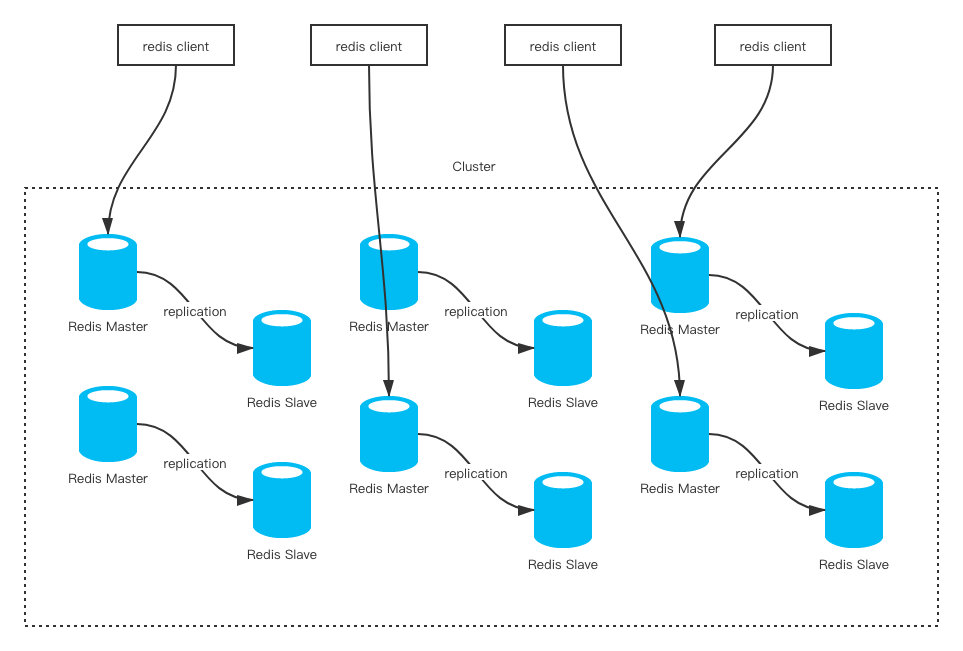

主从复制和哨兵机制保障了高可用，就读写分离而言虽然slave节点扩展了主从的读并发能力，但是写能力和存储能力是无法进行扩展，就只能是master节点能够承载的上限。如果面对海量数据那么必然需要构建master之间的集群，同时必然需要吸收高可用（主从复制和哨兵机制）能力，即每个master分片节点还需要有slave节点。这就是为社么要使用Redis集群。
1、概述
Redis集群可以理解为n个主从架构组合在一起对外服务。Redis Cluster要求至少需要3个master才能组成一个集群，同时每个master至少需要有一个slave节点。
如此，Redis集群的写能力和存储能力就是所有master之和了。
虽然每个master下都挂载了一个slave节点，但是在Redis Cluster中的读、写请求其实都是在master上完成的。slave节点只是充当了一个数据备份的角色，当master发生了宕机，就会将对应的slave节点提拔为master，来重新对外提供服务。

2、 主要模块介绍
2.1、 哈希槽(Hash Slot)
Redis-cluster没有使用一致性hash，而是引入了哈希槽的概念。Redis-cluster中有16384(即2的14次方）个哈希槽，每个key通过CRC16校验后对16383取模来决定放置哪个槽。Cluster中的每个节点负责一部分hash槽（hash slot）。
一个键的对应的哈希槽通过计算键的CRC16 哈希值，然后对16384进行取模得到：HASH_SLOT=CRC16(key) modulo 16383。读写操作都是先计算出键的哈希槽，再在负责该哈希槽的 master 上进行相应操作。
2.2、Cluster总线
每个Redis Cluster节点有一个额外的TCP端口用来接受其他节点的连接。这个端口为普通 client 端口 + 10000。如普通 client 端口为6379，则总线端口为 16379。节点到节点的通讯只使用集群总线。
2.3、集群拓扑
Redis Cluster是一张全网拓扑，节点与其他每个节点之间都保持着TCP连接。
2.4、节点握手
节点认定其他节点是当前集群的一部分有两种方式：
如果一个节点出现在了一条MEET消息中。meet消息会强制接收者接受一个节点作为集群的一部分。
从某个已信任的节点处获知某节点是集群的一部分，则当前节点也会将该节点当成集群的一部分。
3、状态检测及维护
在集群模式下，所有的publish命令都会向所有节点（包括从节点）进行广播，加重了带宽负担，对于在有大量节点的集群中频繁使用pub，会严重消耗带宽，不建议使用。
3.1、Gossip协议
gossip 协议是基于流行病传播方式的节点或者进程之间信息交换的协议。Gossip协议的最大的好处是，即使集群节点的数量增加，每个节点的负载也不会增加很多，几乎是恒定的。
Gossip的特点：在一个有界网络中，每个节点都随机地与其他节点通信，经过一番杂乱无章的通信，最终所有节点的状态都会达成一致。每个节点可能知道所有其他节点，也可能仅知道几个邻居节点，只要这些节可以通过网络连通，最终他们的状态都是一致的。即Gossip协议是最终一致性，不是强一致性。
3.2、基于Gossip协议的故障检测
集群中的每个节点都会不定时地向集群中的其他节点发送PING消息，以此交换各个节点状态信息。
当节点 1 向节点 3 发送PING消息后未在规定时间内收到节点 3 的PONG响应，则节点 1 认为节点 3 PFAIL（主观下线）。当节点1标记节点3为PFAIL后，节点1会通过Gossip消息把这个信息发送给其他节点，接收到信息的节点会进行节点3客观下线状态判定。当节点2接收到来自节点1关于节点3的状态判定信息之后，节点2首先会把节点1加入到节点3的下线报告列表(Fail Report)中。每个节点都会维护一个下线报告列表，主要维护一个节点被哪些节点报告处于下线状态。
只有同样认为节点3处于PFAIL状态的节点才会去做客观下线状态判定，即只有节点2也曾向节点3发送ping且没有得到响应，节点2才会去做客观下线状态判定：如果自己维护的节点3的下线报告列表中包含一半以上的主节点（即超过半数的主节点认为节点3主观下线），则认为节点3 FAIL（客观下线）。
一旦节点2认为节点3客观下线，就向集群广播节点3的FAIL消息，所有收到FAIL消息的节点都会立即将节点3的状态标记为已下线。
疑问：节点2是否可以是从节点？即从节点是否参与故障检测，是否拥有下线报告列表，是否做客观下线判断，是否能发广播？
4、 故障恢复（Failover）
当slave发现自己的master变为FAIL状态时，便尝试进行Failover，以期成为新的master。由于挂掉的master可能会有多个slave。Failover的过程需要经过类Raft协议的过程在整个集群内达到一致， 其过程如下：
- slave发现自己的master变为FAIL
- 长时间不与主节点通信的从节点不具备竞选资格
- 所有竞选者随即休眠，唤醒后立即通过广播向所有节点拉票
- 其他节点收到拉票请求，只有master响应，若本轮竞选中自己没投过票就投，否则不投票，即每个主节点只有一次投票机会
- 从节点发现超过半数的主节点为自己投票就变成新Master：接替旧master 的slot，并让旧master与其他从节点成为自己的从节点
- 广播Pong通知其他集群节点自己成为新的主节点
易知，休眠时间最短的节点容易获得大部分投票。
5、扩容&缩容
5.1、扩容
当集群出现容量限制或者其他一些原因需要扩容时，redis cluster提供了比较优雅的集群扩容方案。
- 首先将新节点加入到集群中，可以通过在集群中任何一个客户端执行cluster meet 新节点ip:端口，或者通过redis-trib add node添加，新添加的节点默认在集群中都是主节点。
- 迁移数据 迁移数据的大致流程是，首先需要确定哪些槽需要被迁移到目标节点，然后获取槽中key，将槽中的key全部迁移到目标节点，然后向集群所有主节点广播槽（数据）全部迁移到了目标节点。
5.2、缩容
缩容的大致过程与扩容一致，需要判断下线的节点是否是主节点，以及主节点上是否有槽，若主节点上有槽，需要将槽迁移到集群中其他主节点，槽迁移完成之后，需要向其他节点广播该节点准备下线（cluster forget nodeId）。最后需要将该下线主节点的从节点指向其他主节点，当然最好是先将从节点下线。